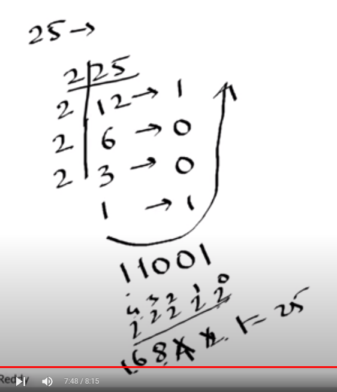

# number to binary
<!DOCTYPE html>
<html>
<head>
    <title>binary to numeric conversion</title>
</head>
<body>
    <h1> Example</h1>
    

    1. for numeric to binary divide by 2
    same is the case with octal ( 8 numbering system ) 0 to 7
    and hexadecimal ( for 16 numering system) 0 to 9 and a to f
</body>
</html>
